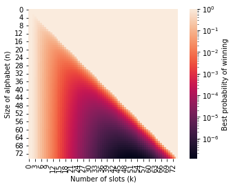
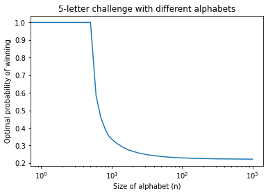

Riddler: Tackling the blind letter challenge — Can You Defeat The TikTok Meme?
My solution to this week’s riddler. (See more of my Riddler solutions here.)
Riddler Classic
From Angela Zhou comes a challenging meme analysis:
The #blindletterchallenge has recently taken TikTok by storm. In this challenge, you are presented with five letters, one at a time. Letters are picked randomly, but you can assume that no two letters are the same (i.e., letters are picked without replacement). As each letter is presented, you must identify which of five slots you will place it. The goal is for the letters in all five slots to be in alphabetical order at the end.
For example, consider an attempt at the challenge by Michael DiCostanzo. The first letter is X. Since this occurs relatively late in the alphabet, he puts this in the fifth slot. The second letter is U. He puts that in the fourth slot, since it also comes relatively late (and the fifth slot is already occupied). Next, the third letter is E. He takes a gamble, and places E in the first slot. The fourth letter is D. Since D comes before E alphabetically, but no slots prior to E are now available, Michael loses this attempt.
If you play with an optimal strategy, always placing letters in slots to maximize your chances of victory, what is your probability of winning?
Solution
To get a sense of how to solve this problem more generally, let’s look at an example of this game and see how we might recursively develop a strategy to find the optimal probability of winning. Suppose the first letter we are given is s, which we decide to place in the in the 4th slot.
\[ \underline{\quad} \text{ }\underline{\quad} \text{ } \underline{\quad} \text{ } \underline{\text{ }s\text{ }} \text{ } \underline{\quad} \]
After this placement, we can only win if exactly three of the remaining letters drawn are in the range from a to r (18 letters) and exactly one is in the range from t to z (6 letters). Given that 4 more letters total must be selected out of the remaining 25 letters, the odds of us having a chance of not losing are
\[ \frac{\binom{18}{3}\binom{6}{1}}{\binom{25}{4}} \]
because, out of the \(\binom{25}{4}\) ways that the remaining 4 letters can be chosen, we can only win if 3 of the letters come from the first 18 letters of the alphabet and the remaining 1 letter is chosen from the final 6 letters. Supposing that we do get lucky enough to get this kind of combination for the remaining letters, what is the best probability of winning at the end? It turns out that we can view the remaining game as two separate similarly structured sub-games!
If the original game can be described as “place 5 randomly chosen letters from an alphabet of size 26 into 5 slots in order”, then if we are guaranteed to get three more letters from the first 17 letters and one more letter from the final 6, the remaining game (after placing the s in the fourth slot) can be described as a combination of the two following sub-games:
- “place 3 randomly chosen letters from a 17-letter alphabet into 3 slots” and
- “place 1 randomly chosen letter from a 6-letter alphabet into 1 slot”.
More generally, suppose we are playing a game in which we are randomly given \(k\) letters from an \(n\)-letter alphabet that we must place into \(k\) slots in order. Each of the \(n\) letters has a \(1/n\) probability of being the first letter to be selected. Suppose letter \(j\in\lbrace 1,2,\dots,n\rbrace\) is the first letter drawn. If we decide to place this letter \(j\) into the \(i^\text{th}\) slot (where \(i\in\lbrace 1,2,\dots,k\rbrace\)), the probability that of the remaining (\(k-1\)) letters, there are \((i-1)\) chosen from the first \((j-1)\) letters and \((k-i)\) letters chosen from the remaining \((n-j)\) letters is
\[ \frac{\binom{j-1}{i-1}\binom{n-j}{k-i}}{\binom{n-1}{k-1}}. \]
If this does not happen, we are guaranteed to lose, but if that does happen, we are effectively left with with two separate games: one where we must place \((i-1)\) randomly chosen letters from the first \((j-1)\) letters of the alphabet, and another where we must place \((k-i)\) randomly chosen letters from the last \((n-j)\) letters of the alphabet. To find the optimal odds of winning, we have to maximize over all possible choices \(i\in\lbrace 1,2,\dots, k\rbrace\) of where to place letter \(j\). Finally, to compute the optimal odds of winning the whole game, we add up the optimal probabilities of winning in each of the \(n\) different cases for the first letter \(j\in\lbrace 1,2,\dots, n\rbrace\).
If we let \(p(n,k)\) denote the optimal probability of winning a game with an \(n\)-letter alphabet where we must place \(k\) letters, we have
\[ p(n,k) = \frac{1}{n}\sum_{j=1}^n \max\Bigg\lbrace \frac{\binom{j-1}{i-1}\binom{n-j}{k-i}}{\binom{n-1}{k-1}}p(j-1,i-1)p(n-j, k-i)\quad:\quad i\in\lbrace 1,\dots,k\rbrace \Bigg\rbrace . \]
Let’s note a few edge cases. If there are no letters left to place (i.e., \(k=0\)) then we win by default, and thus \(p(n,0)=1\) for every \(n\in\mathbb{N}\). Moreover, if the number of slots remaining is exactly equal to the size of the alphabet we pick from, then we can win simply by placing each letter as it appears in its ordered slot, and thus \(p(n,n)=1\).
It’s now pretty straightforward to write a recursive program (using memoization to reduce computation time) to compute the optimal winning probabilities for different sized games.
from scipy.special import binom
from functools import cache
@cache
def q(n, k, j, i):
return binom(j,i) * binom(n-j-1, k-i-1) / binom(n-1,k-1)
@cache
def p(n, k):
if k <= 1 or n <= k:
return 1
out = (
sum(
max(q(n, k, j, i) * p(j, i) * p(n-j-1, k-i-1) for i in range(k))
for j in range(n)
) / n
)
return outThe standard English alphabet has 26 letters, and computing the result we find that
\[ p(26, 5) \approx 0.254335 \]
Hence playing optimally gives us approximately 25.4% chance of winning a game (although this result doesn’t tell us anything about what the strategy is…).
The following plot shows how the maximal probability of winning changes for different sizes of alphabet and different numbers of slots, outside of the standard 26-letter alphabet game with 5 slots (up to 75 letters and 75 slots). (The heat map uses a logarithmic scale, otherwise it wouldn’t show much. )

The Blind Continuum Challenge
What happens when the size of the alphabet gets infinitely large, but we keep the number of slots fixed at 5? The probability of winning in this large-alphabet game appears to level off at around 0.22. The following plot shows the optimal probability of winning the 5-letter challenge with different sizes of alphabets.

Indeed, with a 1,000-letter alphabet, we have:
`p(1000, 5) = 0.222138.`In the limit as \(n\to\infty\), this game approaches what I’m calling “The Blind Continuum Challenge”. That is, the “letters” are picked uniformly at random from the unit interval. This game can be described as follows.
Suppose you are given 5 independent and uniformly distributed random numbers on the interval from 0 to 1. Similar to the 5 letter challenge, you must try to place them in order into 5 slots as they appear. What are your optimal odds of winning?
Using similar arguments as above in the finite-alphabet game, we arrive at the following recursive expression for \(p(k)\), the optimal probability of winning the continuous \(k\)-letter challenge:
\[ p(k) = \int_0^1 \max_{i\in\lbrace 1,\dots,k\rbrace } \Bigg(\binom{k-1}{i-1}x^{i-1}(1-x)^{k-i}p(i-1)p(k-i)\Bigg)\mathrm{d}x \]
I’ve worked out the first few exact values of this probability, all the way up to the blind continuum challenge with 5 “letters”.
| \(k\) | \(p(k)\) | |
|---|---|---|
| 1 | 1 | |
| 2 | \(\frac{3}{4}\) | |
| 3 | \(\frac{377}{726}\) | ≈0.519284 |
| 4 | \(\frac{1037891564126671}{3020778029791104}\) | ≈0.343584 |
| 5 | \(\frac{300437410741595765908031780282088610389625054477278441195747716452053155421581064323185688795147}{1356952251391926002664799322274919178558749179143258568252348272194427343469119954161606283821760}\) | ≈0.221406 |
Indeed, it seems that the continuous version of this game has an optimal winning probability of around 22.14%.